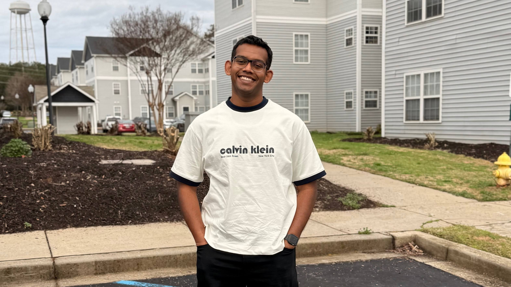

నమస్కారం
India
Roots, family and an undergrad in mechanical engineering at MGIT, Hyderabad.
Paddock Driver profile
I'm Abhishek, but please call me Shake. I'm a twenty-something gearhead in grad school, driven by faith in Christ, cars and curiosity. In short, I'm a researcher, designer and strategist who also loves personal growth and good relationships.

Story Third-culture kid
Originally from India, I grew up as an expat in Saudi Arabia, and I'm now in the US for graduate school. Growing up between cultures left me curious about people, languages and history, and good at feeling at home almost anywhere.
నమస్కారం
Roots, family and an undergrad in mechanical engineering at MGIT, Hyderabad.
مرحبا
Where I grew up as an expat. Hence @thesaudindian.
Hello
Graduate research at Clemson. Go Tigers!
My values and morals come from my faith in Christ.
Cars is my all-time favorite movie. That and a certain TV show with three Brits started my Formula 1 obsession.
I can clap impressively fast. Ask me to clap next time you see me.
At three, I was featured in a national newspaper for naming countries and car models from their flags and designs.
Driven by faith · my motto
“Therefore encourage one another and build each other up, just as in fact you are doing.” 1 Thessalonians 5:11–18 (NIV)
My faith in Christ shapes my values, my work and how I treat the people around me. I'd like to spread love, joy and peace wherever I go, to the point of being the human equivalent of hitting “reply all” by accident. Most days start with Bible reading and prayer, and the playlist is mostly CityAlight, Sovereign Grace and Shane & Shane.
Gallery Photo paddock
Friends, game days and the moments in between.


Off Track Life outside the lab
F1 and WEC on weekends, car spotting the rest of the week. I even raced an all-terrain vehicle in BAJA with QuadTek Racing as an undergrad.
Worship sets, old favorites and whatever riff is stuck in my head this week.
History, faith and good stories. I used to run my college's Readers' Society.
My current sport of choice, and probably too competitive about the kitchen line.
History rabbit holes, new words and learning how other people see the world.
Pit lane mini-game
Hit start, wait for all five lights, then click the moment they go out. F1 drivers average around 0.2 seconds.
Your best: —
Pit Radio
Every connection is a winning lap.